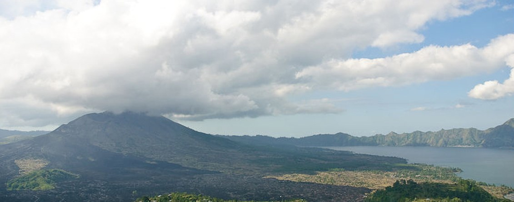
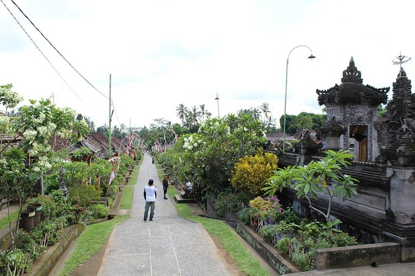
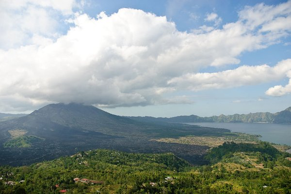
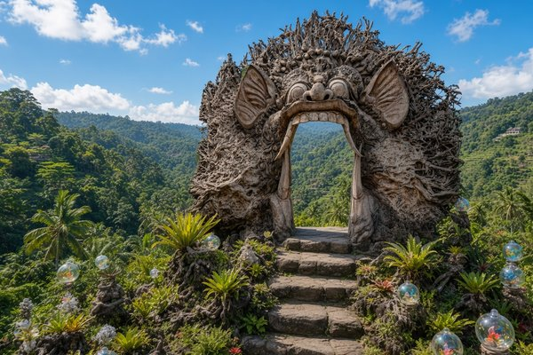
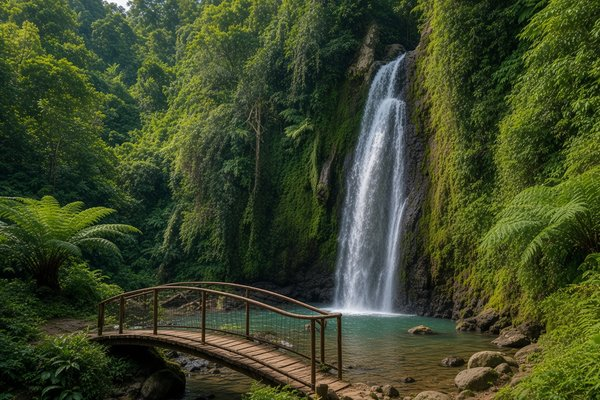
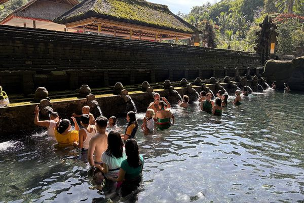
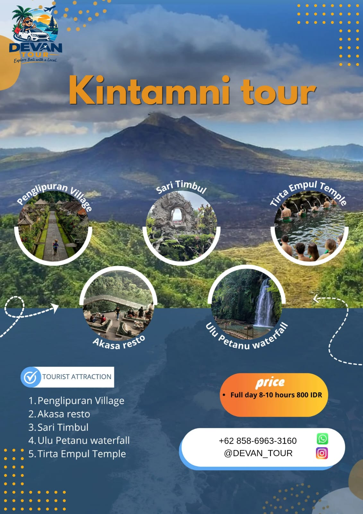

⏱ Full day (8–10 jam)
⏱ Full day (8–10 jam)
Tur Ubud
Rafting, ATV, ayunan Alas Harum, Bali Bird & Reptile Park, dan Pura Tirta Empul dalam satu hari.
Harga segera hadirDETAIL

⏱ Full day (8–10 jam)
Satu hari menjelajahi dataran tinggi dan desa budaya di jalur Kintamani: desa adat Penglipuran yang rapi, makan atau ngopi dengan view Gunung Batur di Akasa resto, taman seni Sari Timbul, air terjun Ulu Petanu yang sejuk, lalu menutup hari di Pura Tirta Empul.

Desa adat di Bangli yang dikenal sebagai salah satu desa tradisional paling rapi di Bali. Jalan batu yang bersih berjajar dengan rumah adat beratap ijuk, tanpa kendaraan bermotor di dalam desa. Suasana tenang untuk melihat kehidupan sehari-hari masyarakat Bali dan berfoto di gang berbambu yang ikonik.

Kafe dan resto di tebing Penelokan, Kintamani, dengan pemandangan langsung ke Gunung dan Danau Batur. Cocok untuk istirahat makan siang atau menikmati kopi arabika Kintamani sambil memandang kaldera. Udara sejuk dataran tinggi membuat berhenti di sini terasa menyegarkan.

Taman seni dan kerajinan di kawasan Sebatu, Tegallalang — dikenal dengan suasana “fairytale garden”, karya kaca, dan spot foto unik di tengah lembah hijau. Pengunjung bisa melihat proses glassblowing, berayun, dan menjelajahi instalasi seni yang menyatu dengan alam.

Air terjun di kawasan Kedisan, Tegallalang, tersembunyi di hutan tropis dengan tebing berlumut dan kolam jernih. Akses relatif mudah lewat anak tangga; cocok untuk foto, berendam singkat, dan menikmati udara sejuk sebelum lanjut ke destinasi berikutnya.

Pura air suci di Tampaksiring yang dibangun di sekitar mata air alami. Umat Hindu Bali datang untuk melukat — ritual penyucian diri di bawah pancuran air suci. Pengunjung boleh ikut dengan berpakaian sopan dan memakai kain (kamen) serta selendang.
Urutan dapat menyesuaikan kondisi lalu lintas dan cuaca.

Tur full day berlangsung 8–10 jam. Pilihan half day juga tersedia.
Ya. Mobil ber-AC serta antar-jemput hotel sudah termasuk.
Full day Rp 800.000 dan half day Rp 600.000.
Pesan via WhatsApp atau isi form booking di halaman ini. Kami konfirmasi tanggal dan detail lewat WhatsApp.
⏱ Full day (8–10 jam)
Rafting, ATV, ayunan Alas Harum, Bali Bird & Reptile Park, dan Pura Tirta Empul dalam satu hari.
 ⏱ Full day (8–10 jam) / Half day
⏱ Full day (8–10 jam) / Half day
Water sport Tanjung Benoa, GWK, kopi luwak, paragliding, Kecak & Uluwatu Temple.
 ⏱ Seharian
⏱ Seharian
Tebing dan pantai ikonik di sisi barat Nusa Penida, dengan kapal cepat dari Sanur.